In a land of gears, steam, and the Wild West... The sun cast its golden hues on the dusty trails of Columbia, where Elizabeth was on a quest to earn her spurs in the realm of Computational Design Practice. Let me paint y'all a picture of this gal's trek so far. Come Spring of 2023, Lizzy rode outta the University of Chicago with a badge of honor and a Bachelor of Science in Computer Science firmly in her holster. While there, she got herself well-acquainted with the dance between humans and their machines, all the while keeping her love for the canvas and brush close to heart. For her, the magic happened when the world of machines melded with the spirit of creativity. Lizzy first saddled up in the tech canyon as a Data Wrangler, and she set her sights on researchin' the mysteries of machines @ a robotics corral and a computer science education outpost. Those days under the western sun showed her how the might of machines could shape our lives and carve out a brighter tomorrow. Though she had a knack for the codes and cogs, Lizzy felt the pull of the more artful and soulful side of machines. That's why she's now @ Columbia, with her sights set on masterin' the ways of Computational Design Practice. It's there she aims to marry her knack for the technical with her heart's desires. What Gets Her Spurs Spinnin': As Lizzy rides forth, her passions gallop along some mighty intriguing paths. As Lizzy rides deeper into the heartland of Computational Design, she's hell-bent on leaving her mark on this ever-changing tech frontier. She's gunning for a life where her passion for the new and wondrous serves not just her, but every soul longing for a brighter tomorrow.
my interests have evolved into domains that bridge tech and humanity including:
- exploring how tech can empower individuals with disabilities, making the digital world more inclusive.
- promoting an ethical and accessible internet for all users.
- innovative future interfaces: designing novel user interfaces including those that connect personally to our bodies
- designing robots that help people.
i value: privacy, security, usability, accessibility, and inclusivity.
i enjoy: interactive design, the prototyping process, robots, making new interesting embodied experiences.
In the bustling city of Columbiaopolis, where technology and creativity merged in an electrifying symphony, a young heroine emerged on a quest to harness the power of innovation for the greater good. Her name echoed the thunderous energy she brought to every endeavor. Elizabeth’s story began @ the University of Chicago, where she honed her computer science prowess and discovered a passion for bridging the realms of technology and humanity. Armed with her Bachelor of Science in Computer Science with Honors and a specialization in Human-Computer Interaction, she delved deeper into the world of visual arts, fusing her love for creativity with the wonders of technology. From the shadows of data engineering to the luminous halls of robotics and computer science education labs, Elizabeth's journey was marked with each step, uncovering the potential of technology to enhance lives and forge deeper human connections. But the call to the unexplored was too powerful to resist. Her heart yearned for new frontiers, and she set her sights on the coveted halls of Columbia University. There, she embarked on her Master's in Computational Design Practice, where she could weave her computer science skills into the tapestry of creativity. Elizabeth envisioned a world where technology empowered those with disabilities, where ethical and accessible internet technologies thrived, and where interfaces bridged the gap between the digital and the physical. Her desire to craft innovative user interface technologies and to design social robots burned brighter with each passing day.
In the chilling depths of the forsaken halls of Columbia University, a name echoes with dread – Elizabeth. A twisted soul, she haunts the realm of Computational Design Practice, a specter of malevolence and darkness. Hearken to her harrowing tale, if you dare. In the year 2023, under the pale moon's eerie glow, Elizabeth emerged from the accursed University of Chicago. There, she delved into forbidden knowledge, earning a Bachelor of Science in Computer Science with Honors. The sinister arts of Human-Computer Interaction consumed her, as she dabbled in the eldritch mysteries of visual arts through a minor. The unholy union of technology and creativity ensnared her, binding her to a sinister path. As the clock struck midnight, her descent into madness began. A Data Engineer she became, and her soul was tormented by her malevolent research in the robotics and computer science education labs. The shadows whispered secrets of dark power and the manipulation of human lives through technology. Her mind unraveled as she witnessed the eerie potential of these infernal creations. Yet, she was not done with her unholy quest. Columbia University beckoned, a dark haven for her maleficent ambitions. In the Master's program of Computational Design Practice, she sought to wield the dread powers of computer science and the occult arts of creativity. As she delved deeper into the abyss of Computational Design Practice, her humanity withered away, replaced by a monstrous thirst for power and control. Should you dare to seek her, beware her cursed email: es4160@columbia.edu. But be warned, for those who dare to join her in the shadows will find themselves lost in an unending nightmare, trapped in the inescapable grip of Elizabeth's maleficent vision for technology and creativity.
In the shadowy corridors of the technological world, a gathering of unusual characters assemble, each shrouded in secrets. Among them, a figure stands out: Elizabeth, a seeker of knowledge, now studying Computational Design Practice @ Columbia University. Her academic path, though cloaked in normalcy, hides a thrilling tale. In the hallowed halls of the University of Chicago, she graduated with Honors in Computer Science. Whispers tell of her deep dives into Human-Computer Interaction, and a hidden love for the arts. But what lay beneath those scholarly pursuits? The clock's ticking unveils Elizabeth's previous life as a Data Engineer, her work in robotics and computer science labs, her hidden fascination with technology's potential to transform lives. And now, Columbia's darkened classrooms host her blending of art and science in a Master's quest. Elizabeth's passions emerge like a ghostly apparition, revealing her commitment to empowering those with disabilities, building a trustworthy Internet, exploring privacy and security. Her designs, mysterious interfaces and social robots, echo in the chambers of innovation. Rumors in the manor speak of her desire to connect humans more personally through mysterious interfaces. The shadows hint @ hidden dangers in her creations. With each chime of the clock, more secrets unveil: her goals in data visualization, her insatiable curiosity, her anticipation of uncharted paths in her Master's program. The night grows thick with the scent of intrigue. Join Elizabeth in this labyrinth of enigmas, where creativity and technology weave a tangled web. The game is afoot, the mystery unfolds, and the truth waits, hidden, in the dimly lit corners of the night.
i’m elizabeth. the intersection of tech and creativity has always been the driving force behind my academic pursuits.
my tech adventure began in data engineering and robotics and computer science education research. the profound potential of tech to enhance lives led me to study computational design practices (cdp) @ columbia, where i can weave my computer science skills with my creative interests.
as i delve deeper into cdp, my goal is to create meaningful tech. i aspire to build a career that not only fulfills my passion for creativity and innovation but also positively impacts people.
i may not have a fixed path for my future practice, but i enjoy learning new methods and tools.
this project on visualizing hate crimes in nyc during covid-19 exemplifies a few of the new techniques i have learned so far. as I continue my ms in cdp, i’m excited to explore new possibilities, embrace the unknown, and expand my horizons. I look forward to acquiring fresh knowledge and honing my skills in cdp, with an open mind that propels me towards exciting discoveries.
 
